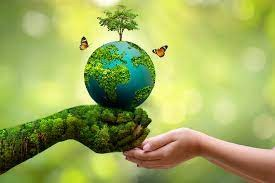

Saving the trees,
Safeguarding your future.
A quick overview about us ?
- Who we are: A non-profit organisation dedicated to tree conservation, habitat restoration, and environmental education.
- Core Missions:
- Planting trees in urban and regional areas to rebuild green spaces.
- Organizing local cleanup and conservation workshops.
- Connecting passionate volunteers with meaningful environmental projects.
- Core Values:
- Action: Starting small to create big, lasting impacts.
- Community: Bringing people together for a common green goal.
- Sustainability: Protecting ecosystems for future generations.
| Further details about Greener Society | ||
|---|---|---|
| Our Contact Info | Location | Melbourne, Victoria, Australia |
| Phone | (+61) 4 1189 0779 | |
| Focus Area | Primary Focus | Urban Tree Planting & Bushland Restoration |
| Community Work | Environmental Education & Volunteer Recruitment | |
| Scale | Operations | Community-led Non-Profit Projects across Victoria |
| Impact | Over 10,000 Trees Planted & 500+ Active Volunteers | |

Interested in our Environmental Conservation Campaign ? Join with us now and together contribute to a greener world!
- To learn about our currently available Job Positions and their requirements, visit Position Description Page
- Ready to get involved with our projects? Visit Job Application Page
- For more details about our organization members, visit About Team Page